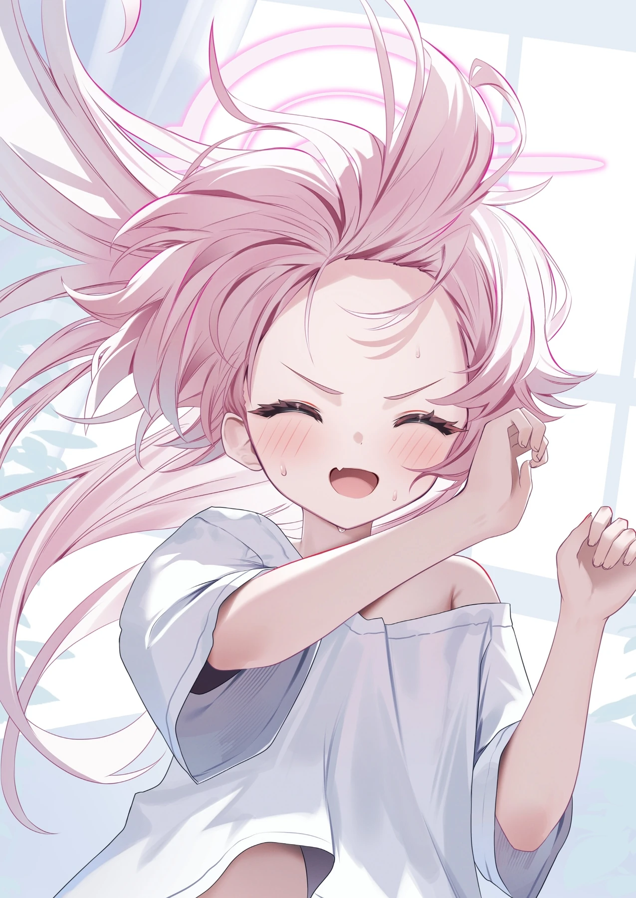
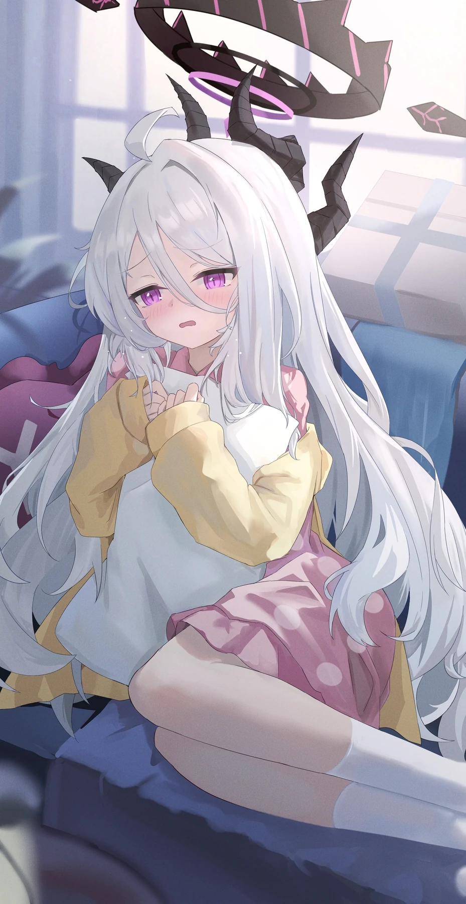

01
LONG-TERM MEMORY三个月前说的话，
三个月前说的话，
她还会记得。
情节、画像与既定事实组成三层记忆。每一次重逢，都不必从零开始。
不止一问一答。她会记得、会想念、会主动开口，
在你自己的设备里，陪你把平凡日子过成故事。
呼啊～随便随便，要轻松最重要啦。

小鸟游星野 · 刚刚•••呼啊～随便随便，要轻松最重要啦。
每个角色都有独立的记忆、情绪与生活。
你喜欢的那个她，不只是几句设定。
熟悉的聊天方式只是入口。真正让陪伴发生的，
是记忆、情绪，以及那些没有被要求过的主动。
情节、画像与既定事实组成三层记忆。每一次重逢，都不必从零开始。
她有自己的作息、兴趣和生活。不是机械打卡，而是恰到好处地主动开口。

“忙完了吗？别硬撑。”
无需云端账号。角色、对话与设置保存在自己的设备上，访问令牌保护每一次本地连接。
自动发现局域网设备，主动发送或接收整包备份。覆盖前自动保留安全副本，不依赖云端同步服务。
星伴 Windows 与 Android 双端已经准备好。
下载、安装，然后和喜欢的角色见个面吧。